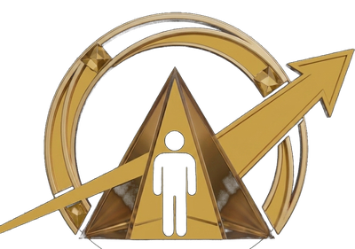

Lovorian shows you whether customers can find your business — on Google, and on the AI tools changing how they search. Then I build the plan and, if you want, do the work to fix what's holding you back. Get your results within two business days, plus a free 30-minute call to walk through what I found. From there, I'll guide you on what comes next to keep improving.
More people now turn to AI tools to find businesses, compare options, and get answers — and Google has built AI answers directly into its own search results. Research shows that when one of those AI answers appears, website clicks drop by roughly half. People get their answer and move on — without ever visiting the business behind it.
That's not a trend on the horizon. It's already changing who gets found — and who doesn't.
I score how easy it is for customers and AI to find you — across search, AI answers, and local listings — within two business days.
You get a plan that tells you exactly where to spend next — prioritized by what actually moves the needle — plus a free 30-minute call to walk through it.
Choose to hire me for the fix, on a flat fee.
You run the business. You don't have hours to learn the difference between SEO, GEO, and AEO — the three ways customers and AI now find companies like yours. That's my job. I handle the technical side and hand you a plan in plain English.
Most businesses are invisible to AI — customers can't find them, and they don't know it. I fix that first. From there, as the work proves itself and you're ready, the path goes further — getting your business's information in order, putting AI to work in how you actually operate, and giving you one place to oversee all of it. You take each step only once the last one has earned it, and I stay the one person accountable the whole way.
From AI-Uncertain to AI-Operational.
See the Full Path →$500 gets you a human-reviewed audit — not a generic scan. A full score across search and AI visibility, delivered within two business days, and a free 30-minute call to walk through exactly what I found and what to do next.
Most businesses only need to win back one customer — someone who finds you through an AI search you didn't even know you were missing from — for this to pay for itself many times over. And unlike a generic SEO tool, this audit looks at how AI answer engines see you too — the fastest-growing way customers are finding businesses right now, and the one most audits still ignore.
Get Your Audit